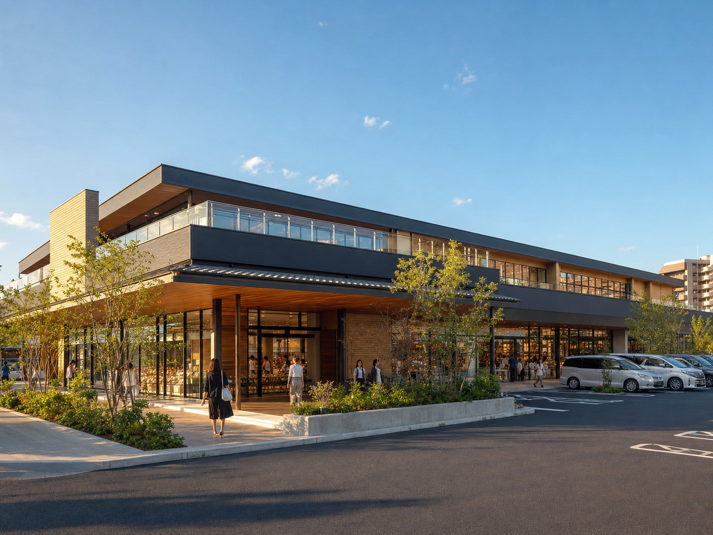

売上予測中央値4,180万円/月
＋8.6% 類似事例比
7つの評価レイヤーで売上・賃料・出店ニーズを統合分析。
営業が次に提案すべき業態と条件を、根拠とともに提示します。
＋8.6% 類似事例比
−6万円 希望条件との差
94点 需要・物件適合
7データ層 統合済み
賃料・競合 要調整

栃木県宇都宮市インターパーク周辺
生活密着型と自動車来店型の双方に強い立地。賃料条件を5〜8%調整すると成約確率が最大化します。
売上予測を構成する要因を、営業が説明できる粒度で可視化
スコアに影響した主要ファクト
同規模・同商圏の実績との比較
エリア需要・出店トレンド・競合空白・物件適合を統合順位化
売上・投資回収・賃料負担率から逆算
売上・賃料負担・投資回収を比較
| 業態 | 月商予測 | 適正賃料 | 負担率 | 回収 |
|---|
今日から実行する順番を提案
候補企業への提案ポイントを自動生成
分析結果を保存しました